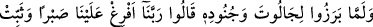
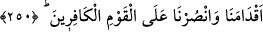

köprüsünü, şimşek veya rüzgar gibi geçeceklerdir. Nûrlarından, dünya bağlısı
kişilerin gözleri dönecek.”
Ebû Hüreyre tekrar:
“Ey Allah’ın Rasûlü! Bana da onların ameli gibisini emret ki, belki onlara
katılabilirim.” dedi.
Efendimiz (s.a.) buyurdular ki:
“Onlar, çetin bir yola girdiler. Allah doyurduktan sonra onlar açlığı, giydirdikten
sonra açıklığı, suya kandırdıktan sonra susuzluğu tercih ettiler. Bütün bunları,
Allah’ın yanındaki nimetleri umarak, terkettiler. Hesabından korkarak helâli bile
terkettiler. Dünyada bedenleriyle bulundular. Dünyanın herhangi bir şeyi ile iştigal
etmediler. Melekler, peygamberler onların Allah’a olan tâatlarine hayret ettiler.
Onlara müjdeler olsun. Ben de istiyorum ki, Allah Teâlâ benimle onların arasını
cem’etsin.”
Efendimiz (s.a.) böyle söyledikten sonra, onlara hasret duyduğu için ağladı ve şöyle
buyurdu:
“Cenâb-ı Allah ehl-i arza azâb murad edip de, onlara nazar ederse, azâbı onlardan
başkasına çevirir. Ey Ebâ Hüreyre! Onların yoluna sarıl!”
Allah’ın selâmı rahmet ve bereketi onların üzerine olsun. Allah’ım bizi de onlara
katılanlardan eyle! Âmin.
Şeyh Attâr şöyle demiştir:
Hakk yolunda birtakım kâmil insanlar kendilerini gizlemişlerdir.
Cisimsiz cihetsiz olmuşlar, namsız ve nişânsız kalmışlardır.
Onların vücûdları şerîatte, gönülleri de hakîkattedir.
Onların gönülleriyle canları birdir, onlar Lâ-mekânîdir.
250. Câlût ve askerleriyle savaşa tutuştuklarında: Ey Rabbimiz! Üzerimize sabır
yağdır. Bize cesaret ver ki tutunalım. Kâfir kavme karşı bize yardım et, dediler.
Tâlût ve onunla beraber bulunan mü’minler, Câlût ve askerleriyle savaşmak üzere
ortaya çıkıp harp meydanında yerlerini aldılar. Düşman ordusunun aded ve hazırlık
bakımından çok güçlü olduğunu görüp sayı itibariyle bunlara güç yetirmenin mümkün
olmadığına iyice kanaat getirince Allah’a tazarru ve niyâzla şöyle dediler: “Ey
Rabbimiz, biz senin kullarınız. Hâlimizi ıslah etmeni istiyoruz. Harbin sıkıntı ve
zorluklarına karşı dayanabilmemiz için, her tarafımızı kuşatıp saracak şekilde üzerimize
sabır dök. Ayaklarımızı sağlam tut. Bizim gönüllerimize sebât, düşmanın gönlüne ise
korku sok. Savaşın her anında kuvvet ve gücümüzü artır. Mukavemet anında